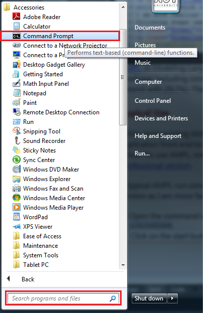
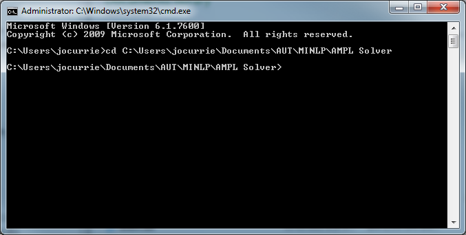
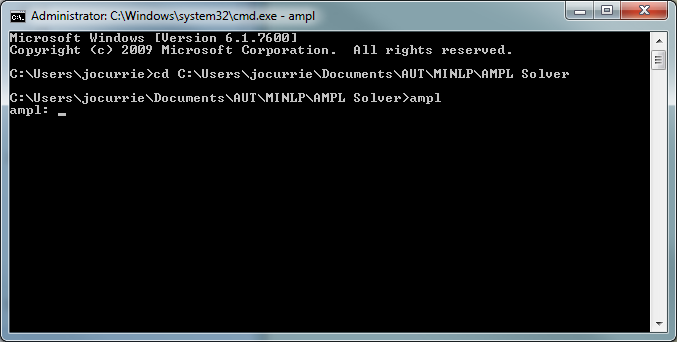
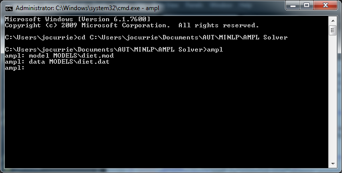
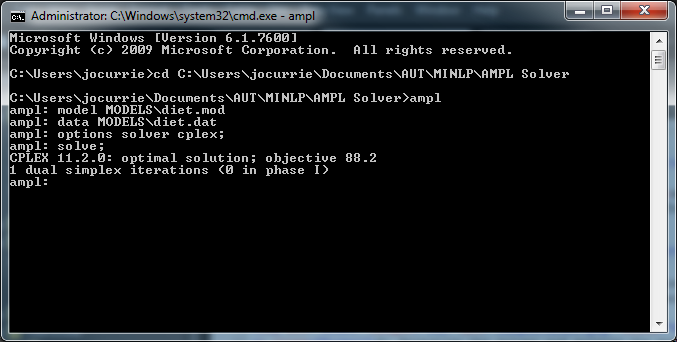
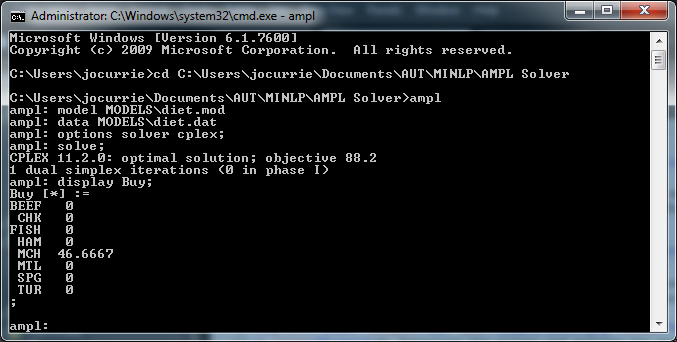
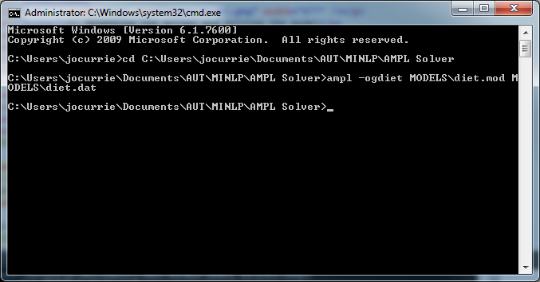

AMPL Interfacing
Introduction
AMPL (A Modeling Language for Mathematical Programming) is a modeling language that can be used to describe complex optimization problems ranging from linear to nonlinear including continuous and discrete variables. It is a widely used format, with over 59% of submissions to NEOS in January 2011 being in AMPL format (GAMS was second with 29.7%). Therefore while Matlab provides it's own powerful modeling language, it was important to be able to incorporate existing models from AMPL into OPTI.
Users with AMPL
From OPTI Toolbox v1.76 users who have AMPL already installed on their PC (and on the MATLAB path) can use amplRead directly on a .mod file, without having to following the conversion steps below. OPTI will automatically call the AMPL executable and perform the conversion, before reading the .nl, as below. See the documentation provided by amplRead() above for more information.
Typical Use
While most existing AMPL users will be familiar with the operation of AMPL, there will be some who need a quick overview. While AMPL is a modeling language, it is also an application front end to a range of solvers (much like OPTI). A notable feature however is the AMPL presolve which attempts to simplify the model prior to passing it to the solver. To use AMPL, one can obtain the free student version, however this is limited to 500 variables and 500 constraints. For larger problems you will need to purchase the professional version.
A typical AMPL run consists of either running it from command window (i.e. DOS) or from the scrolling window utility which is available for free. I prefer the command window version as I am more familiar with it this way. In order to run AMPL, complete the following steps (assuming you have downloaded AMPL and it is on your PC):
1) Open the command window
Click on the start button and under All Programs -> Accessories click on Command Prompt. Alternatively you can type "cmd" into the search bar at the bottom of the start menu.

2) Change the current directory to the AMPL directory
Unless the AMPL executable (ampl.exe) is on your system's path (you would have added it manually) you will need to change the current directory to the location of ampl.exe. Type "cd x" where x is the full path to the ampl executable.

3) Start AMPL
AMPL can be started by typing "ampl" into the command window. The AMPL parser will then accept commands directly from the command window:

4) Loading a Model and Data
AMPL is supplied with several example models in the MODELS folder. To load a model and data set, type the following:

5) Selecting the solver and solving the model
Selecting a solver is simple, and so is solving it:

You can also display the decision variables using the display command, and the name of the variable (check the original .mod file):

There is a lot more to AMPL than the above brief overview but shows the general functionality. If you are interested in learning more about AMPL and it's language I suggest you get the AMPL book.
Generating a .NL file for use with OPTI
You would have noted the model loaded by AMPL in the above example was called diet.mod. If you open this file you will see this is a succinct definition of the problem written in AMPL, with the respective dataset contained in diet.dat. However this file is not used directly by any solver, and is in fact parsed to a .NL file internally by AMPL before being passed to a solver. This allows AMPL to perform the presolve + reordering and other algorithm tricks in order to best solve the problem. While this process happens behind the scenes, we can tell AMPL to generate us a .NL file which can be read by OPTI using the following command:
ampl -og(1) (2) (3) (4)
Where (1) is the output file name, (2) is the model .mod file, (3) is the optional data .dat file, and (4) is the optional options file. Note AMPL is not open at this point, and is called as part of the command!

If you have a look at the generated diet.nl file it is quite unintelligible to us, however it makes for easy parsing by the AMPL Solver Library, which is free code from Netlib written by the creators of AMPL to allow users to connect their own solvers to the AMPL engine. This library has been implemented as a MEX function in amplRead in OPTI allowing us to read in the .NL file and solve just about any AMPL problem! Simply generate a .NL file for any AMPL model you wish to solve using the above step, and open it using amplRead to create an optiprob structure.
Copyright © 2011-2013 Jonathan Currie (I2C2)